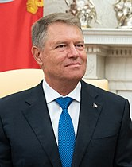

President - Klaus Iohannis
The Constitution of Romania is based on the constitution of France's Fifth Republic and was approved in a national referendum on 8 December 1991 and amended in October 2003 to bring it into conformity with EU legislation. The country is governed on the basis of a multi-party democratic system and the separation of powers between the legislative, executive and judicial branches. It is a semi-presidential republic where executive functions are held by both the government and the president.[253] The latter is elected by popular vote for a maximum of two terms of five years and appoints the prime minister who in turn appoints the Council of Ministers. The legislative branch of the government, collectively known as the Parliament (residing at the Palace of the Parliament), consists of two chambers (Senate and Chamber of Deputies) whose members are elected every four years by simple plurality.[254][255] The justice system is independent of the other branches of government and is made up of a hierarchical system of courts with the High Court of Cassation and Justice being the supreme court of Romania.[256] There are also courts of appeal, county courts and local courts. The Romanian judicial system is strongly influenced by the French model, is based on civil law and is inquisitorial in nature. The Constitutional Court (Curtea Constituțională) is responsible for judging the compliance of laws and other state regulations with the constitution, which is the fundamental law of the country and can only be amended through a public referendum.[254][257] Romania's 2007 entry into the EU has been a significant influence on its domestic policy, and including judicial reforms, increased judicial cooperation with other member states, and measures to combat corruption.[258]
Since December 1989, Romania has pursued a policy of strengthening relations with the West in general, more specifically with the United States and the European Union, albeit with limited relations involving the Russian Federation. It joined the NATO on 29 March 2004, the European Union (EU) on 1 January 2007, while it joined the International Monetary Fund and the World Bank in 1972, and is a founding member of the World Trade Organization.[259] In the past, recent governments have stated that one of their goals is to strengthen ties with and helping other countries (in particular Moldova, Ukraine, and Georgia) with the process of integration with the rest of the West.[260] Romania has also made clear since the late 1990s that it supports NATO and EU membership for the democratic former Soviet republics in Eastern Europe and the Caucasus.[260] Romania also declared its public support for Turkey, and Croatia joining the European Union.[260] Romania opted on 1 January 2007, to accede to the Schengen Area, and its bid to join was approved by the European Parliament in June 2011, but was rejected by the EU Council in September 2011. As of August 2019, its acceptance into the Schengen Area is hampered because the European Council has misgivings about Romania's adherence to the rule of law,[261] a fundamental principle of EU membership.[262] In December 2005, President Traian Băsescu and United States Secretary of State Condoleezza Rice signed an agreement that would allow a U.S. military presence at several Romanian facilities primarily in the eastern part of the country.[263] In May 2009, Hillary Clinton, US Secretary of State, declared that "Romania is one of the most trustworthy and respectable partners of the USA."[264] Relations with Moldova are a special case given that the two countries share the same language and a common history.[260] A movement for unification of Romania and Moldova appeared in the early 1990s after both countries achieved emancipation from communist rule[265] but lost ground in the mid-1990s when a new Moldovan government pursued an agenda towards preserving a Moldovan republic independent of Romania.[266] After the 2009 protests in Moldova and the subsequent removal of Communists from power, relations between the two countries have improved considerably.[267]
Romania is divided into 41 counties (județe, pronounced judetse) and the municipality of Bucharest. Each county is administered by a county council, responsible for local affairs, as well as a prefect responsible for the administration of national affairs at the county level. The prefect is appointed by the central government but cannot be a member of any political party.[279] Each county is subdivided further into cities and communes, which have their own mayor and local council. There are a total of 320 cities and 2,861 communes in Romania.[235]: 17 A total of 103 of the larger cities have municipality status, which gives them greater administrative power over local affairs. The municipality of Bucharest is a special case, as it enjoys a status on par to that of a county. It is further divided into six sectors[235]: 6 and has a prefect, a general mayor (primar), and a general city council. The NUTS-3 (Nomenclature of Territorial Units for Statistics) level divisions of the European Union reflect Romania's administrative-territorial structure and correspond to the 41 counties plus Bucharest.[280] The cities and communes correspond to the NUTS-5 level divisions, but there are no current NUTS-4 level divisions. The NUTS-1 (four macroregions) and NUTS-2[281] (eight development regions) divisions exist but have no administrative capacity and are used instead for coordinating regional development projects and statistical purposes.[280]
| Development region | Area (km2 ) | Population (2011) | Most populous urban centre |
|---|---|---|---|
| Nord-Vest | 34,159 | 2,600,132 | Cluj-Napoca(411,379) |
| Centru | 34,082 | 2,360,805 | Brașov(369,896) |
| Nord-Est | 36,850 | 3,302,217 | Iași(382,484) |
| Sud-Est | 35,762 | 2,545,923 | Constanța(425,916) |
| Sud – Muntenia | 34,489 | 3,136,446 | Ploiești(276,279) |
| București - Ilfov | 1,811 | 2,272,163 | Bucharest(2,272,163) |
| Sud-Vest Oltenia | 29,212 | 2,075,642 | Craiova(356,544) |
| Vest | 32,028 | 1,828,313 | Timișoara(384,809) |